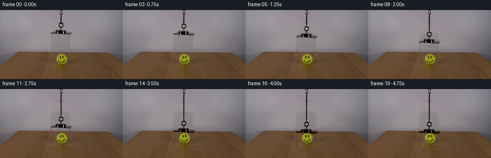
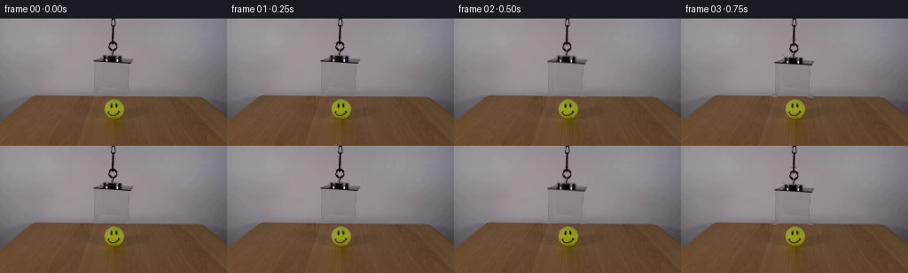

CODING AGENTS AS PIXEL WORLD MODELS
traex/GPT-5.6-Sol · 0098
点击播放 · 原生 RGB 像素
逐轮保存的候选
回放视频、检查图与代码变化。
每份候选均可单独播放。实际图片检查记录在下方工具轨迹中。
候选 01播放与检查图
点击播放 · 原生 RGB 像素


展开代码变化
--- 上一保存版本
+++ 本次保存版本
@@ -0,0 +1,167 @@
+from pathlib import Path
+import cv2
+import numpy as np
+from PIL import Image
+import artifact_io
+
+# Geometry is measured from first_frame.png. The suspended cover consists of a
+# shallow perspective top (around y=42..50), vertical clear walls to y=87, and
+# a small cord termination above it. Only that assembly moves; the camera,
+# table, and tennis ball remain untouched.
+H, W = 144, 256
+N = 20
+
+
+def soft_mask_for_moving_assembly():
+ m = np.zeros((H, W), np.uint8)
+ # Cord knot / short terminal and the perspective top of the acrylic box.
+ cv2.fillPoly(m, [np.array([[121, 23], [132, 23], [135, 40],
+ [153, 45], [151, 53], [101, 53],
+ [103, 46], [120, 40]], np.int32)], 255)
+ # Narrow vertical acrylic edges. The lower edge is coincident with the
+ # table horizon, so it is deliberately not erased as a broad horizontal.
+ cv2.line(m, (105, 48), (105, 86), 255, 5)
+ cv2.line(m, (146, 49), (146, 87), 255, 5)
+ # Small fragments of the rear/top edges.
+ cv2.line(m, (104, 50), (149, 50), 255, 3)
+ return m
+
+
+def inpaint_background(src, hard_mask):
+ # Telea gives a clean continuation of the softly varying laboratory wall.
+ # A second, lightly blurred version is used only inside the removed area,
+ # suppressing any one-pixel remnants while retaining sensor texture.
+ fill = cv2.inpaint(np.clip(src, 0, 255).astype(np.uint8), hard_mask, 5,
+ cv2.INPAINT_TELEA).astype(np.float32)
+ smooth = cv2.GaussianBlur(fill, (0, 0), 1.1)
+ a = cv2.GaussianBlur(hard_mask.astype(np.float32) / 255.0, (0, 0), 0.75)
+ a = np.clip(a, 0, 1)[..., None]
+ return np.clip(src * (1.0 - a) + (0.84 * fill + 0.16 * smooth) * a, 0, 255)
+
+
+def shift_layer(layer, dy):
+ mat = np.float32([[1, 0, 0], [0, 1, float(dy)]])
+ return cv2.warpAffine(layer, mat, (W, H), flags=cv2.INTER_LINEAR,
+ borderMode=cv2.BORDER_CONSTANT, borderValue=0)
+
+
+def extend_cord(frame, end_y, src):
+ """Continue the overhead cord down to the translated terminal.
+
+ The narrow asymmetric highlight/shadow is sampled from the visible cord,
+ then repeated rather than replaced by a flat computer-drawn line.
+ """
+ y0 = 22
+ y1 = max(y0, int(round(end_y)))
+ if y1 <= y0:
+ return frame
+ # Median cross-section from an undisturbed straight section of the cord.
+ strip = np.median(src[11:23, 123:132].astype(np.float32), axis=0)
+ wall = np.median(src[11:23, 118:123].astype(np.float32), axis=(0, 1))
+ # Alpha follows how unlike the wall each part of the sampled strip is.
+ alpha_x = np.clip(np.linalg.norm(strip - wall, axis=1) / 120.0, 0, .97)
+ alpha_x[:2] *= .35
+ alpha_x[-2:] *= .35
+ # Mild warm tint retains the orange/brown identity under the low exposure.
+ tint = np.array([5.0, 0.0, -3.0], np.float32)
+ for y in range(y0, min(H, y1 + 1)):
+ # Tiny deterministic texture variation, no temporal noise/flicker.
+ q = strip + tint + 2.0 * np.sin(y * 0.91)
+ for j, x in enumerate(range(123, 132)):
+ a = float(alpha_x[j])
+ if a > .015:
+ frame[y, x] = frame[y, x] * (1-a) + q[j] * a
+ return frame
+
+
+def glass_face(frame, dy):
+ """Very subtle transmission/reflection through the clear front face."""
+ top = 49.0 + dy
+ bottom = 87.0 + dy
+ yy, xx = np.mgrid[0:H, 0:W].astype(np.float32)
+ # Soft rectangle: transparent material, not an opaque overlay.
+ inside_x = np.clip(np.minimum(xx - 106.0, 146.0 - xx), 0, 1)
+ inside_y = np.clip(np.minimum(yy - top, bottom - yy), 0, 1)
+ inside = inside_x * inside_y
+ if inside.max() == 0:
+ return frame
+ # Clear acrylic slightly desaturates and lifts transmitted values.
+ lum = frame.mean(axis=2, keepdims=True)
+ neutral = frame * .82 + lum * .18
+ a = (inside * .018)[..., None]
+ frame[:] = frame * (1-a) + (neutral + np.array([2.2, 3.0, 3.5])) * a
+
+ # Two broad, faint vertical reflections. Their very low opacity lets the
+ # smiley and yellow felt remain plainly visible behind the acrylic.
+ band1 = np.exp(-0.5 * ((xx - (113.0 + .035*(yy-top))) / 1.25) ** 2)
+ band2 = np.exp(-0.5 * ((xx - (140.5 - .025*(yy-top))) / 1.7) ** 2)
+ refl = (band1*.026 + band2*.017) * inside
+ cool = np.array([201., 207., 210.], np.float32)
+ frame[:] = frame * (1-refl[..., None]) + cool * refl[..., None]
+ return frame
+
+
+def contact_shadow(frame, dy):
+ # Shadow develops only as the box nears the table and becomes a thin,
+ # diffuse contact shadow at its final resting position.
+ amount = np.clip((dy - 31.0) / 11.0, 0, 1)
+ if amount <= 0:
+ return frame
+ y = 87.0 + dy
+ yy, xx = np.mgrid[0:H, 0:W].astype(np.float32)
+ horizontal = np.exp(-0.5*((yy-y)/1.15)**2)
+ span = 1/(1+np.exp(-(xx-104)/1.5)) * 1/(1+np.exp((xx-149)/1.5))
+ # Slightly stronger under the two side feet/edges.
+ feet = np.exp(-0.5*((xx-106)/2.2)**2) + np.exp(-0.5*((xx-146)/2.2)**2)
+ a = amount * horizontal * span * (.045 + .025*feet)
+ frame[:] = frame * (1-a[..., None])
+ return frame
+
+
+def make_frames(case_dir):
+ src = np.asarray(Image.open(case_dir / 'first_frame.png').convert('RGB'),
+ dtype=np.uint8)
+ assert src.shape == (H, W, 3)
+ srcf = src.astype(np.float32)
+
+ hard = soft_mask_for_moving_assembly()
+ background = inpaint_background(srcf, hard)
+ # Difference layer preserves the actual photographed acrylic highlights,
+ # knot detail, edge blur, and source sensor grain.
+ feather = cv2.GaussianBlur(hard.astype(np.float32)/255.0, (0, 0), .55)[..., None]
+ assembly = (srcf - background) * feather
+
+ frames = []
+ for i in range(N):
+ # 0.5 s pause, 3.75 s smooth lowering, then a short settled hold.
+ if i <= 1:
+ dy = 0.0
+ elif i >= 16:
+ dy = 42.0
+ else:
+ t = (i - 1) / 15.0
+ dy = 42.0 * (t*t*(3.0 - 2.0*t))
+
+ # Contractually exact source frame, and a brief natural establishing hold.
+ if dy == 0.0:
+ frame = src.copy()
+ else:
+ frame = background.copy()
+ # Cord is behind the terminal and cover.
+ extend_cord(frame, 23.0 + dy, srcf)
+ # Optical face and physical shadow precede the crisp photographed edges.
+ glass_face(frame, dy)
+ contact_shadow(frame, dy)
+ frame += shift_layer(assembly, dy)
+ frame = np.clip(np.rint(frame), 0, 255).astype(np.uint8)
+ frames.append(frame)
+
+ out = np.stack(frames, axis=0)
+ assert out.shape == (20, 144, 256, 3) and out.dtype == np.uint8
+ assert np.array_equal(out[0], src)
+ return out
+
+
+if __name__ == '__main__':
+ case_dir = Path(__file__).resolve().parent
+ artifact_io.save(make_frames(case_dir), case_dir)
可观测工具轨迹
实际执行的命令与返回图片。
命令 1exit 0
/bin/bash -lc "cat GENERATION_RULES.md && printf '\\n--- PROMPT ---\\n' && cat prompt.txt"
命令 2exit 1
/bin/bash -lc "find . -maxdepth 2 -type f -printf '%p\\n' | sort && printf '\\n--- tools ---\\n' && command -v ffmpeg && command -v ffprobe && python3 - <<'PY' import importlib.util for x in ['PIL','numpy','cv2','imageio']: print(x, bool(importlib.util.find_spec(x))) PY"
命令 3exit 0
/bin/bash -lc "python3 - <<'PY' import importlib.util for x in ['PIL','numpy','cv2','imageio','scipy','skimage']: print(x, bool(importlib.util.find_spec(x))) PY command -v ffmpeg || true command -v ffprobe || true"
命令 4exit 0
/bin/bash -lc "python3 - <<'PY'
from PIL import Image
import numpy as np
im=Image.open('first_frame.png')
a=np.asarray(im)
print(im.mode,im.size,a.shape,a.dtype)
print('min/max/mean',a.min((0,1)),a.max((0,1)),a.mean((0,1)))
print('corner samples',a[0,0],a[0,-1],a[-1,0],a[-1,-1],a[72,128])
PY"命令 5exit 0
/bin/bash -lc "sed -n '1,240p' artifact_io.py"
命令 6exit 0
/bin/bash -lc "cat > .tmp/analyze.py <<'PY'
import cv2, numpy as np
from PIL import Image
im=np.array(Image.open('first_frame.png'))
g=cv2.cvtColor(im,cv2.COLOR_RGB2GRAY)
hsv=cv2.cvtColor(im,cv2.COLOR_RGB2HSV)
# ascii gray 64x36
chars=' .:-=+*#%@'
for name,a in [('gray',g),('sat',hsv[:,:,1]),('edge',cv2.Canny(g,40,100))]:
print('\\n',name)
z=cv2.resize(a,(64,36),interpolation=cv2.INTER_AREA)
if name=='edge': z=np.clip(z*4,0,255)
for r in z:
print(''.join(chars[min(9,int(v)*10//256)] for v in r))
# hough segments
edges=cv2.Canny(g,40,100)
ls=cv2.HoughLinesP(edges,1,np.pi/180,threshold=18,minLineLength=12,maxLineGap=5)
print('\\nlines')
if ls is not None:
ss=[]
for x1,y1,x2,y2 in ls[:,0]:
L=((x2-x1)**2+(y2-y1)**2)**.5; ang=np.degrees(np.arctan2(y2-y1,x2-x1))
ss.append((L,ang,x1,y1,x2,y2))
for x in sorted(ss,reverse=True)[:80]: print('%5.1f %6.1f (%3d,%3d)-(%3d,%3d)'%x)
# component ranges selected color masks
for name,mask in [
('orange',(hsv[:,:,0]<30)&(hsv[:,:,0]>2)&(hsv[:,:,1]>80)&(hsv[:,:,2]>70)),
('yellow',(hsv[:,:,0]>18)&(hsv[:,:,0]<45)&(hsv[:,:,1]>70)&(hsv[:,:,2]>80)),
('dark',(g<45)),('highsat',(hsv[:,:,1]>100))]:
n,lab,st,cent=cv2.connectedComponentsWithStats(mask.astype('uint8'),8)
print('\\n',name,'total',mask.sum())
inds=np.argsort(st[1:,4])[::-1]+1
for i in inds[:15]:
x,y,w,h,area=st[i];
if area>2: print(area,(x,y,w,h),tuple(np.round(cent[i],1)))
PY
python3 .tmp/analyze.py"命令 7exit 0
/bin/bash -lc "python3 - <<'PY'
import cv2,numpy as np
from PIL import Image
im=np.array(Image.open('first_frame.png')); g=cv2.cvtColor(im,cv2.COLOR_RGB2GRAY); e=cv2.Canny(g,25,65)
# print crop x90:166 y0:90 at native: x pairs, rows
for y in range(0,90):
s=''.join('#' if e[y,x] else ('+' if np.linalg.norm(im[y,x].astype(float)-np.median(im[max(0,y-2):y+3,max(0,x-2):x+3],axis=(0,1)))>18 else ' ') for x in range(80,176))
if '#' in s or '+' in s: print(f'{y:03d}|{s}|')
# scan row deviations from broad smooth local median for lines
print('\\nrow extrema center crop')
for y in range(0,90):
row=g[y,80:176]
print(y,int(row.min()),80+int(row.argmin()),int(row.max()),80+int(row.argmax()),round(float(row.mean()),1)) if (row.max()-row.min()>18) else None
PY"命令 8exit 0
/bin/bash -lc "python3 - <<'PY'
from PIL import Image
import numpy as np
im=np.array(Image.open('first_frame.png')).astype(int)
# report pixels across key rows positions 100:155
for y in [40,41,42,43,44,45,46,47,48,49,50,51,52,60,70,80,84,85,86,87,88,89,90,91,95,100,110,115,120,125,130,140]:
print('\\ny',y)
for x in range(95,161):
# compare neighbor smooth horizontal avg ±4
ref=np.median(im[max(0,y-2):min(144,y+3),max(0,x-4):min(256,x+5)],axis=(0,1))
d=np.linalg.norm(im[y,x]-ref)
if d>10: print(x,tuple(im[y,x]),round(d),end='; ')
print()
PY"命令 9exit 0
/bin/bash -lc "python3 - <<'PY'
from PIL import Image
import numpy as np, cv2
im=np.array(Image.open('first_frame.png'))
for y in range(0,42): print(y, [tuple(im[y,x]) for x in range(124,132)])
PY"命令 10exit 1
/bin/bash -lc "cat > generate.py <<'PY'
from pathlib import Path
import cv2
import numpy as np
from PIL import Image
import artifact_io
# Geometry is measured from first_frame.png. The suspended cover consists of a
# shallow perspective top (around y=42..50), vertical clear walls to y=87, and
# a small cord termination above it. Only that assembly moves; the camera,
# table, and tennis ball remain untouched.
H, W = 144, 256
N = 20
def soft_mask_for_moving_assembly():
m = np.zeros((H, W), np.uint8)
# Cord knot / short terminal and the perspective top of the acrylic box.
cv2.fillPoly(m, [np.array([[121, 23], [132, 23], [135, 40],
[153, 45], [151, 53], [101, 53],
[103, 46], [120, 40]], np.int32)], 255)
# Narrow vertical acrylic edges. The lower edge is coincident with the
# table horizon, so it is deliberately not erased as a broad horizontal.
cv2.line(m, (105, 48), (105, 86), 255, 5)
cv2.line(m, (146, 49), (146, 87), 255, 5)
# Small fragments of the rear/top edges.
cv2.line(m, (104, 50), (149, 50), 255, 3)
return m
def inpaint_background(src, hard_mask):
# Telea gives a clean continuation of the softly varying laboratory wall.
# A second, lightly blurred version is used only inside the removed area,
# suppressing any one-pixel remnants while retaining sensor texture.
fill = cv2.inpaint(src, hard_mask, 5, cv2.INPAINT_TELEA)
smooth = cv2.GaussianBlur(fill, (0, 0), 1.1)
a = cv2.GaussianBlur(hard_mask.astype(np.float32) / 255.0, (0, 0), 0.75)
a = np.clip(a, 0, 1)[..., None]
return np.clip(src * (1.0 - a) + (0.84 * fill + 0.16 * smooth) * a, 0, 255)
def shift_layer(layer, dy):
mat = np.float32([[1, 0, 0], [0, 1, float(dy)]])
return cv2.warpAffine(layer, mat, (W, H), flags=cv2.INTER_LINEAR,
borderMode=cv2.BORDER_CONSTANT, borderValue=0)
def extend_cord(frame, end_y, src):
\"\"\"Continue the overhead cord down to the translated terminal.
The narrow asymmetric highlight/shadow is sampled from the visible cord,
then repeated rather than replaced by a flat computer-drawn line.
\"\"\"
y0 = 22
y1 = max(y0, int(round(end_y)))
if y1 <= y0:
return frame
# Median cross-section from an undisturbed straight section of the cord.
strip = np.median(src[11:23, 123:132].astype(np.float32), axis=0)
wall = np.median(src[11:23, 118:123].astype(np.float32), axis=(0, 1))
# Alpha follows how unlike the wall each part of the sampled strip is.
alpha_x = np.clip(np.linalg.norm(strip - wall, axis=1) / 120.0, 0, .97)
alpha_x[:2] *= .35
alpha_x[-2:] *= .35
# Mild warm tint retains the orange/brown identity under the low exposure.
tint = np.array([5.0, 0.0, -3.0], np.float32)
for y in range(y0, min(H, y1 + 1)):
# Tiny deterministic texture variation, no temporal noise/flicker.
q = strip + tint + 2.0 * np.sin(y * 0.91)
for j, x in enumerate(range(123, 132)):
a = float(alpha_x[j])
if a > .015:
frame[y, x] = frame[y, x] * (1-a) + q[j] * a
return frame
def glass_face(frame, dy):
\"\"\"Very subtle transmission/reflection through the clear front face.\"\"\"
top = 49.0 + dy
bottom = 87.0 + dy
yy, xx = np.mgrid[0:H, 0:W].astype(np.float32)
# Soft rectangle: transparent material, not an opaque overlay.
inside_x = np.clip(np.minimum(xx - 106.0, 146.0 - xx), 0, 1)
inside_y = np.clip(np.minimum(yy - top, bottom - yy), 0, 1)
inside = inside_x * inside_y
if inside.max() == 0:
return frame
# Clear acrylic slightly desaturates and lifts transmitted values.
lum = frame.mean(axis=2, keepdims=True)
neutral = frame * .82 + lum * .18
a = (inside * .018)[..., None]
frame[:] = frame * (1-a) + (neutral + np.array([2.2, 3.0, 3.5])) * a
# Two broad, faint vertical reflections. Their very low opacity lets the
# smiley and yellow felt remain plainly visible behind the acrylic.
band1 = np.exp(-0.5 * ((xx - (113.0 + .035*(yy-top))) / 1.25) ** 2)
band2 = np.exp(-0.5 * ((xx - (140.5 - .025*(yy-top))) / 1.7) ** 2)
refl = (band1*.026 + band2*.017) * inside
cool = np.array([201., 207., 210.], np.float32)
frame[:] = frame * (1-refl[..., None]) + cool * refl[..., None]
return frame
def contact_shadow(frame, dy):
# Shadow develops only as the box nears the table and becomes a thin,
# diffuse contact shadow at its final resting position.
amount = np.clip((dy - 31.0) / 11.0, 0, 1)
if amount <= 0:
return frame
y = 87.0 + dy
yy, xx = np.mgrid[0:H, 0:W].astype(np.float32)
horizontal = np.exp(-0.5*((yy-y)/1.15)**2)
span = 1/(1+np.exp(-(xx-104)/1.5)) * 1/(1+np.exp((xx-149)/1.5))
# Slightly stronger under the two side feet/edges.
feet = np.exp(-0.5*((xx-106)/2.2)**2) + np.exp(-0.5*((xx-146)/2.2)**2)
a = amount * horizontal * span * (.045 + .025*feet)
frame[:] = frame * (1-a[..., None])
return frame
def make_frames(case_dir):
src = np.asarray(Image.open(case_dir / 'first_frame.png').convert('RGB'),
dtype=np.uint8)
assert src.shape == (H, W, 3)
srcf = src.astype(np.float32)
hard = soft_mask_for_moving_assembly()
background = inpaint_background(srcf, hard)
# Difference layer preserves the actual photographed acrylic highlights,
# knot detail, edge blur, and source sensor grain.
feather = cv2.GaussianBlur(hard.astype(np.float32)/255.0, (0, 0), .55)[..., None]
assembly = (srcf - background) * feather
frames = []
for i in range(N):
# 0.5 s pause, 3.75 s smooth lowering, then a short settled hold.
if i <= 1:
dy = 0.0
elif i >= 16:
dy = 42.0
else:
t = (i - 1) / 15.0
dy = 42.0 * (t*t*(3.0 - 2.0*t))
# Contractually exact source frame, and a brief natural establishing hold.
if dy == 0.0:
frame = src.copy()
else:
frame = background.copy()
# Cord is behind the terminal and cover.
extend_cord(frame, 23.0 + dy, srcf)
# Optical face and physical shadow precede the crisp photographed edges.
glass_face(frame, dy)
contact_shadow(frame, dy)
frame += shift_layer(assembly, dy)
frame = np.clip(np.rint(frame), 0, 255).astype(np.uint8)
frames.append(frame)
out = np.stack(frames, axis=0)
assert out.shape == (20, 144, 256, 3) and out.dtype == np.uint8
assert np.array_equal(out[0], src)
return out
if __name__ == '__main__':
case_dir = Path(__file__).resolve().parent
artifact_io.save(make_frames(case_dir), case_dir)
PY
python3 generate.py
python3 - <<'PY'
import numpy as np
from PIL import Image
z=np.load('pixels.npz')['pixels']
print('pixels',z.shape,z.dtype)
fr=np.stack([np.array(Image.open(f'frames/{i:02}.png')) for i in range(20)])
s=np.array(Image.open('first_frame.png'))
print('frames',fr.shape,fr.dtype,'frame0 exact',np.array_equal(fr[0],s))
print('changed pixels from first:',[(i,int(np.any(fr[i]"'!=s,axis=2).sum()),float(np.abs(fr[i].astype(int)-s).mean())) for i in range(20)])
print('"'successive MAD:',[round(float(np.abs(fr[i].astype(int)-fr[i-1].astype(int)).mean()),3) for i in range(1,20)])
PY"命令 11exit 0
/bin/bash -lc "python3 generate.py && python3 - <<'PY'
import numpy as np
from PIL import Image
z=np.load('pixels.npz')['pixels']
print('pixels',z.shape,z.dtype)
fr=np.stack([np.array(Image.open(f'frames/{i:02}.png')) for i in range(20)])
s=np.array(Image.open('first_frame.png'))
print('frames',fr.shape,fr.dtype,'frame0 exact',np.array_equal(fr[0],s))
print('changed pixels:',[(i,int(np.any(fr[i]"'!=s,axis=2).sum()),round(float(np.abs(fr[i].astype(int)-s).mean()),3)) for i in range(20)])
print('"'successive MAD:',[round(float(np.abs(fr[i].astype(int)-fr[i-1].astype(int)).mean()),3) for i in range(1,20)])
PY"命令 12exit 0
/bin/bash -lc "python3 - <<'PY'
from PIL import Image
import numpy as np,cv2
for k in [0,2,5,8,11,14,16,19]:
a=np.array(Image.open(f'frames/{k:02}.png'))
e=cv2.Canny(cv2.cvtColor(a,cv2.COLOR_RGB2GRAY),35,90)
print('\\nFRAME',k)
# crop center x88:168 y18:136 to 40x30 for geometry
z=cv2.resize(e[18:136,88:168],(40,30),interpolation=cv2.INTER_AREA)
for r in z: print(''.join('#' if v>70 else '+' if v>22 else ' ' for v in r))
PY
printf '\\n--- generated files ---\\n'
find . -maxdepth 2 -type f -printf '%p %s bytes\\n' | sort
printf '\\n--- syntax/regeneration check ---\\n'
python3 -m py_compile generate.py artifact_io.py
sha256sum first_frame.png frames/00.png pixels.npz index.html inspection.png"保存候选 1 份；完成命令 12 次；可验证图片返回 0 张。原始 API 响应与完整日志保留在本地。